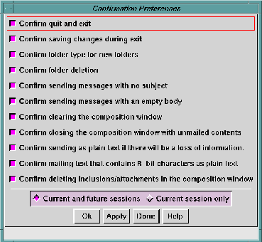

It is possible to request the
Ishmail program
to perform certain
whose effects are irreversible, such as permanently deleting a
mail folder or clearing the contents of the current Composition
window. To make
Ishmail friendly to use, these actions cause a
pop-up window to be opened that requests you to confirm that
you
really want to perform a certain action.
Experienced users of
Ishmail may become annoyed, however, at
seeing a confirmation pop-up window when their answer to the
question
always is "Yes, I know what I'm doing."
The
Confirmation Preferences window lets you selectively disable the
confirmation pop-up windows for various actions.
Actions that can be selectively confirmed include:
- Quit and Exit
- Do you really want to quit (or exit) from
Ishmail?
- Save changes during exit
- Do you want to save changes to folders before exit?
- Folder type for new folders
- Which type (UNIX, mh, or MMDF) of folder do you wish
to create?
- Folder deletion
- Do you really want to delete a folder?
- Sending messages with no subject
- Do you really want to send a message with no subject
header?
- Sending messages with an empty body
- Do you really want to send an empty (null) message?
- Clearing the Composition window
- Do you really want to lose everything you've typed in the
window?
- Closing the Composition window with unmailed contents
- Do you really want to abandon this new message?
- Sending a message as plain text even though information will be
lost
- Do you really want to lose MIME data when this message
is sent?
- Mailing text that contains 8-bit characters as plain text
- Do you really want to send a message without encoding,
even though this means some information may be lost
along the way?
- Deleting inclusions or attachments in the
Composition Window
- Do you really want to delete included data, with no
chance for undelete?

Apply (or cancel) your changes using the row of buttons across
the bottom of the window. See
Applying Your Changes.
Preceding Section: Message-related Preferences
Following Section: Displayed Headers Option
Parent Section: Main Window Options Menu
Contents of Ishmail User's Guide